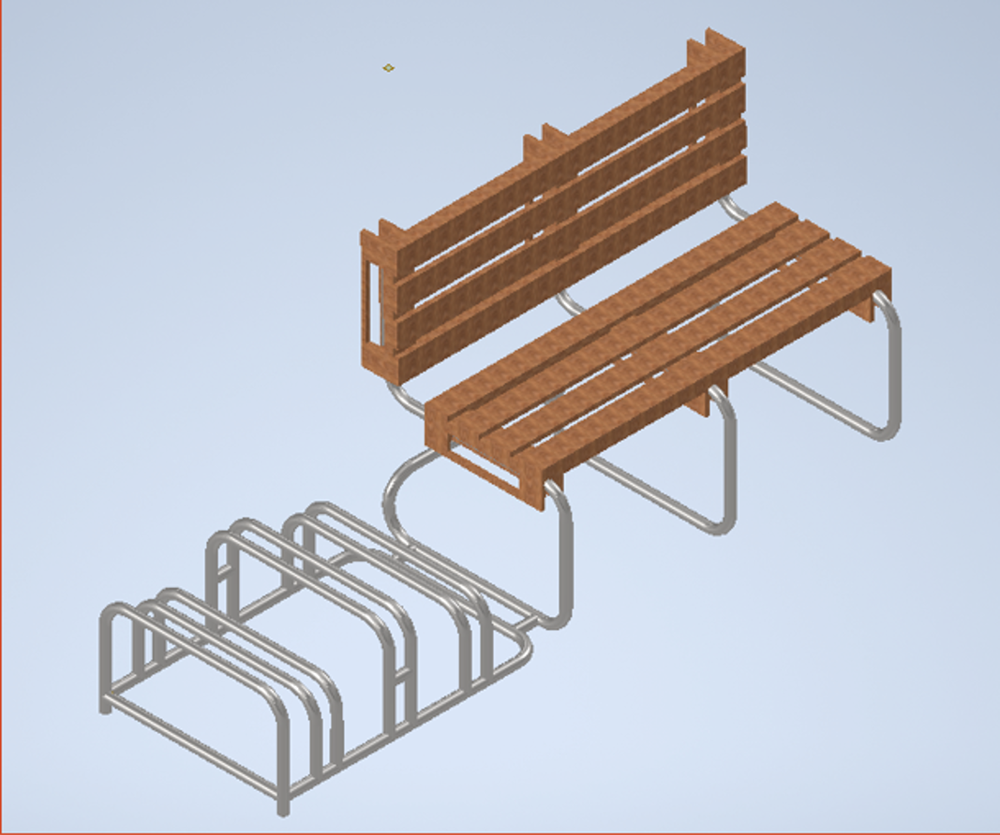
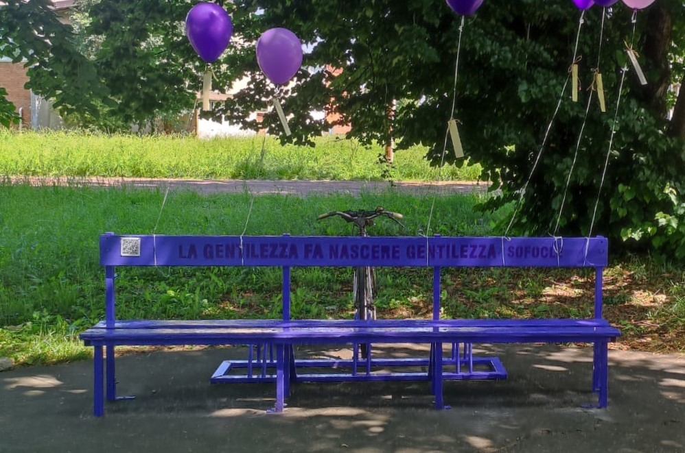
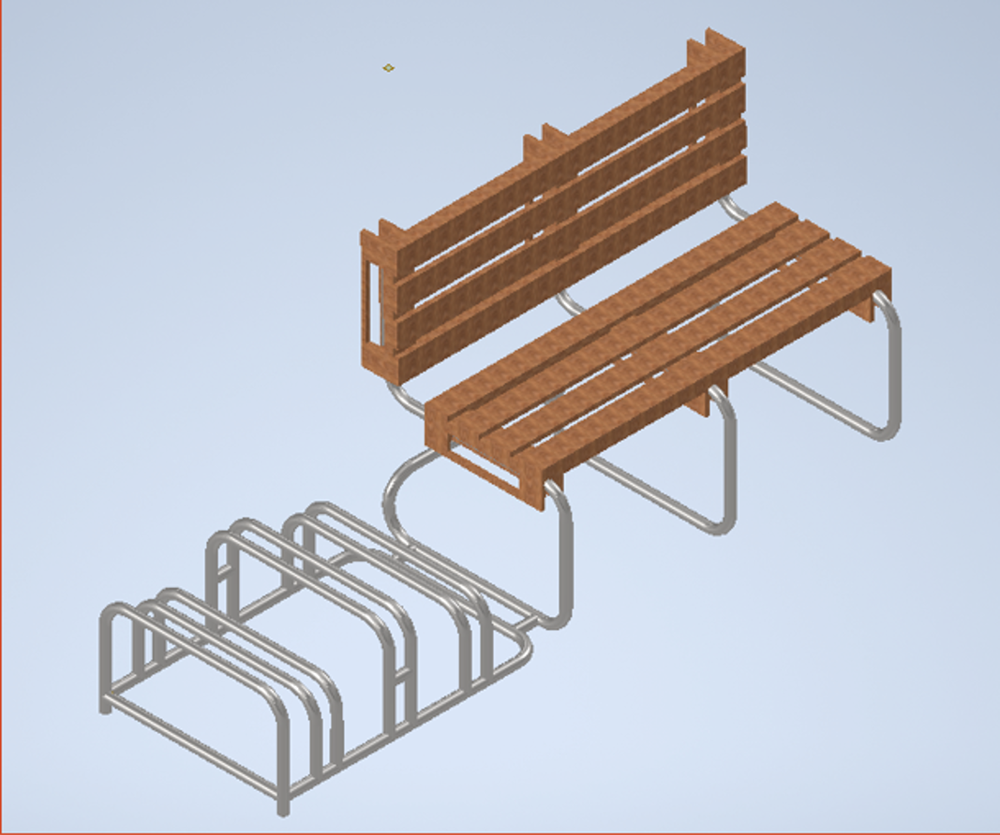
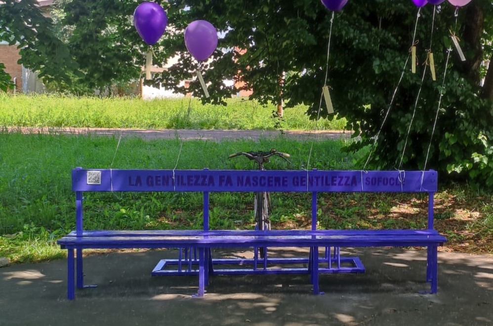

works
Development of the project The Bench of Kindness
Abstract
Every year the school gives a project to develop in groups for the pupils attending tenth grade. In my case the school decided to partecipate in the initiative "Costruiamo Gentilezza" which is "Let's Build Kindness" in english. For the particular initiative to which the school has decided to join we had to develop a bench, and the best one would be built somewhere in the school complex.
The project
To develop the project, students had to find a way to build a bench following a few key rules. The bench had to be:
After inventing a new bench of kindness, the best projects of every class would have been presented to a jury consisting in teachers and the principal. Finally the three best projects will be presented by the students in front of the jury and the principal, deciding which one will be realized. To vote, the jury had three main requirements:
Development
To create this project, we decided to utilize pallets, which are made from recycled wood and easy to find, combined with tubular steel, which we can gather from ruined and discarded desks. To actually build the bench, we thought about fitting together the pallets on a skeleton made with the tubular steel welded in a particular shape. In the shape, we decided to add a bike rack, to help people who is helping the environment by giving them a place to put their bycicle. For the decorations we decided to utilize the color lilla, which is a light and sweet shade, giving calmness to who looks at the bench. We also chose to put the phrase "La gentilezza fa nascere gentilezza" which means "Kindness gives birth to kindness" by Sofocle.
How it ended
The project has given to our team a chance to work on something about the real world, making us part of it. It has been an actual success because it has been voted as the best project and it has been realized in the school yard, in front of the main access. It has been a win in every aspect and we had the chance to give everyone a clear message about recycling and kindness.
 


